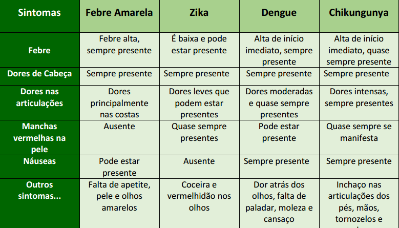
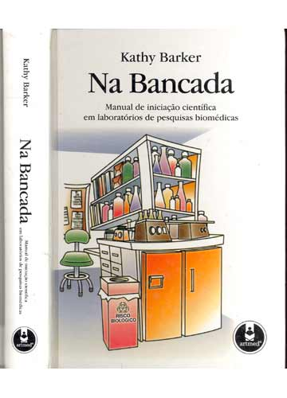
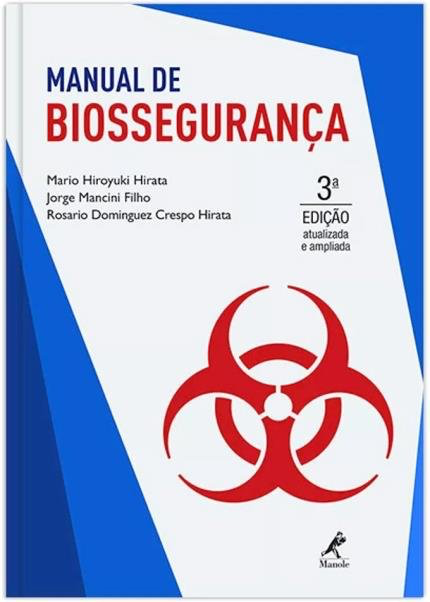

Introdução à Biossegurança e pesquisa com OGM
Comissão Interna de Biossegurança
Faculdade de Medicina
UnB
Versão 2.0
2020
Você não pode desenvolver atividades com OGM sozinho, em sua casa, por exemplo!!!!


Modelo descentralizado;
As CIBios devem enviar relatórios anuais à CTNBio, além de reportar eventuais acidentes;
As CIBios são responsáveis por garantir a biossegurança envolvendo OGM no país!
Há 4 níveis de biossegurança, crescentes em grau de contenção e complexidade do nível de proteção, e normalmente estão de acordo com a classe de risco do agente biológico, embora exceções possam ocorrer.
Os níveis de biossegurança estipulam regras mínimas para as instalações, equipamentos de proteção e procedimentos que devem ser observados para manter a contenção do material biológico e proteção individual e da coletividade.
CLASSIFICAÇÃO DE RISCOS:
As classes de risco de material biológico são assim definidas:
Classe de risco 1 (baixo risco individual e para a comunidade): inclui os agentes biológicos conhecidos por não causarem doenças no homem ou nos animais adultos sadios;
Classe de risco 2 (moderado risco individual e limitado risco para a comunidade): inclui os agentes biológicos que provocam infecções no homem ou nos animais, cujo potencial de propagação na comunidade e de disseminação no meio ambiente é limitado;
Classe de risco 3 (alto risco individual e moderado risco para a comunidade): inclui os agentes biológicos que possuem capacidade de transmissão por via respiratória e que causam patologias humanas ou animais, com tratamentos conhecidos;
Classe de risco 4 (alto risco individual e para a comunidade): inclui os agentes biológicos com grande poder de transmissibilidade por via respiratória de transmissão e tratamento desconhecidas.
Os laboratórios da FM possuem nível de biossegurança 1 ou 2.
Identifique o nível de biossegurança de seu laboratório!
O acesso ao laboratório deve apresentar as áreas de circulação desobstruídas e livres de equipamentos e estoques de materiais;
A sinalização contendo o símbolo internacional de risco biológico, advertência de área restrita, identificação e telefone de contato do Profissional Responsável, deve ser afixada na porta de acesso ao laboratório onde há o manuseio de material biológico.
No laboratório, todos os procedimentos, sejam técnicos ou administrativos, devem estar descritos, serem de fácil acesso e do conhecimento das pessoas envolvidos em sua execução;
As pessoas devem lavar as mãos antes e após a manipulação de agentes de risco, após a remoção das luvas e antes de saírem do laboratório;
É proibido comer, beber, fumar, manusear lentes de contato e aplicar cosméticos (maquiagem, cremes, dentre outros) nas áreas de trabalho do laboratório;
Recomenda-se a não utilização de cosméticos e adereços (brincos, pulseiras, relógio, dentre outros) no laboratório. As pessoas que usam lentes de contato em laboratórios deverão considerar usar também óculos de proteção ou protetores faciais;
É proibido levar qualquer objeto à boca no laboratório, a pipetagem deverá ser realizada com dispositivos mecânicos, nunca com a boca.
As superfícies de trabalho devem ser descontaminadas ao final de cada turno de trabalho e sempre que ocorrer derramamento de material biológico;
Devem ser mantidas a limpeza e a organização do laboratório;
É proibido manter alimentos, plantas e animais que não sejam objetos de análise do laboratório;
Materiais e reagentes devem ser estocados em instalações apropriadas no laboratório;
Deve haver sempre disponível kit de primeiros socorros.
Todos os resíduos devem ser descartados segundo normas legais e técnicas vigentes e em cumprimento ao Plano de Gerenciamento de Resíduos da Instituição:
- Nos insetários, todo o material a ser descartado deve ser acondicionado em lixeiras. Os sacos do lixo devem ser recolhidos ao final do dia e descontaminados por 12h a -18ºC ou por autoclavagem. Após descontaminação podem ser descartados;
- No laboratório de Leishmania, todo o material a ser descartado deve ser acondicionado em saco de autoclave. Quando os sacos estiverem 2/3 cheios devem ser fechados e transportados em dupla contenção até a autoclave para descontaminação. Após descontaminação podem ser descartados;
- Nos laboratórios de fungos, todo o material a ser descartado deve ser acondicionado em saco de autoclave. Quando os sacos estiverem 2/3 cheios devem ser fechados e autoclavados para descontaminação. Após descontaminação podem ser descartados.
No laboratório, os materiais perfurocortantes devem ser manuseados cuidadosamente e seguindo as normas instruídas;
O descarte do material perfurocortante deve ser realizado em recipiente de paredes rígidas, resistentes à punctura, ruptura e vazamento, com tampa, devidamente identificado, segundo normas legais e técnicas vigentes, localizado próximo à área de trabalho, sendo expressamente proibido o esvaziamento desses recipientes para o seu reaproveitamento;
No descarte, as agulhas usadas não devem ser dobradas, quebradas, reutilizadas, recapeadas, removidas das seringas ou manipuladas antes de serem desprezadas. Descartá-las nas caixas Descarpack;
As vidrarias quebradas não devem ser manipuladas diretamente com a mão, devendo ser removidas por meios mecânicos, como vassoura, pá de lixo ou pinças e devem ser descartadas em recipientes adequados;
É necessária a organização de um plano de contingência e emergência;
Deve ser mantida uma rotina de controle de artrópodes e roedores.
Equipamentos de proteção individual, tais como luvas, avental ou jaleco, são requeridos durante o trabalho e devem estar descritos em documentos de Procedimentos Operacionais Padrão (POPs);
Exemplo de POP do Laboratório de Farmacognosia da UnB:
O jaleco deverá ter mangas compridas ajustadas nos punhos e não deve ser usado fora da área laboratorial. A equipe do laboratório nunca deve levar jaleco para casa sem prévia descontaminação;
Os EPIs devem ser retirados antes de sair do ambiente de trabalho, depositados em local exclusivo para esse fim e descontaminados antes de serem reutilizados ou descartados;
Laboratório de Farmacognosia - UnB
POP0005 - Pesagem e solubilização de amostras
Elaboração: Sofia B. Pinto
Revisão: Lorena C. Albernaz
Aprovação: Laila SE Darvenne
Saúde, segurança e proteção ambiental:
- Utilizar luvas laboratoriais no manuseio de amostras e solventes
- Realizar os procedimentos com solvente em capela química ou ambiente com exaustão adequada
Mãos enluvadas não devem tocar “superfícies limpas” tais como teclados, telefones, maçanetas, entre outros. Luvas devem ser usadas, segundo suas indicações e seu uso é restrito ao laboratório. Luvas descartáveis não poderão ser lavadas, nem reutilizadas;
É obrigatório o uso de calçados fechados que possam proteger contra acidentes.
O laboratório deve possuir dispositivos de emergência para lavagem dos olhos e presença de chuveiro de emergência próximo;
As rotas de fuga e saídas de emergência devem estar identificadas;
Deve haver espaço suficiente entre as bancadas, cabines e equipamentos de modo a permitir acesso fácil para a realização da limpeza;
O mobiliário do laboratório deve evitar detalhes desnecessários, como reentrâncias, saliências, quebras, cantos, frisos e tipos de puxadores que dificultem a limpeza e a manutenção, e atender os critérios de ergonomia, conforme normas técnicas e legais vigentes;
As cadeiras e móveis utilizados no trabalho laboratorial deverão ser capazes de suportar cargas e usos previstos e ser revestidos com material que não seja absorvente e que possa ser facilmente descontaminado.
As equipes do laboratório e de apoio devem receber treinamentos anuais apropriados sobre os riscos potenciais associados aos trabalhos desenvolvidos. Treinamentos adicionais serão necessários em caso de mudanças de normas ou de procedimentos;
O trabalho em laboratório deve ser supervisionado por profissional de nível superior com conhecimento e experiência comprovada na área de Biossegurança;
O Profissional Responsável deve implementar políticas e procedimentos com ampla informação a todos que trabalhem no laboratório sobre o potencial de risco relacionado ao trabalho;
O acesso ao laboratório deve ser restrito a profissionais da área, mediante autorização do Profissional Responsável;
Pessoas susceptíveis às infecções, tais como as imunocomprometidas ou imunodeprimidas, não devem ser permitidas no laboratório. Cabe ao Profissional Responsável a decisão final quanto à análise de cada circunstância e a determinação de quem deve entrar ou trabalhar no laboratório:
- Nos insetários de criação de Aedes aegypti é proibida a entrada de pessoas que apresentem, ou tenham apresentado nos últimos 10 dias, sintomas de dengue, Zika, Chikungunya ou Febre Amarela como demonstrado na Tabela 1 a seguir:


Febre Amarelo
Febre Alta
Dores de cabeça
Dores nas costas
Náuseas
Falta de apetite
Pele e olhos amarelos
Todo o pessoal deve ser orientado sobre os possíveis riscos e necessidade de seguir as especificações de cada rotina de trabalho, procedimentos de Biossegurança e práticas estabelecidas no Manual de Biossegurança do laboratório, acessível a todos os usuários;
As portas do laboratório devem permanecer fechadas quando os ensaios estiverem sendo realizados e trancadas ao final das atividades. Nas áreas de acesso seguro de dupla contenção, as portas de saída e as portas dos laboratórios não poderão estar abertas ao mesmo tempo. Deve-se sempre manter uma porta fechada para manter a contenção;
O pessoal do laboratório deve estar apropriadamente imunizado ou examinado quanto aos agentes manipulados ou potencialmente presentes no laboratório.
Manter registro da utilização do sistema de luz ultravioleta das Cabines de Segurança Biológica (CSBs) com contagem do tempo de uso (vida útil de 7.500 horas);
Manter um sistema de manutenção, calibração e de certificação dos equipamentos de contenção. A cada seis meses as CSBs e demais equipamentos essenciais de segurança devem ser testados, calibrados e certificados;
O equipamento contaminado deverá ser descontaminado de acordo com as normas locais, estaduais ou federais, antes de ser enviado para conserto, manutenção ou acondicionamento para transporte, de acordo com as normas locais, estaduais ou federais aplicáveis, antes de ser removido do local;
Acidentes ou incidentes que resultem em exposição a materiais biológicos potencialmente patogênicos devem ser imediatamente notificados ao Profissional Responsável, sendo mantido registro por escrito dos acidentes e das providências adotadas;
- Caso envolva OGM, o acidente deve seguir procedimento emergencial a ser explicado nos próximos slides.
Todos os materiais e resíduos potencialmente infecciosos devem ser colocados em um recipiente com uma tampa que evite o vazamento durante a coleta, o manuseio, o processamento, o armazenamento, o transporte ou o embarque. Devem ser descontaminados, preferencialmente esterilizados, antes de serem reutilizados ou descartados;
O laboratório deve ser projetado de modo a permitir fácil limpeza e descontaminação. Carpetes e tapetes não são apropriados para laboratório.
Devem ser usadas luvas, quando houver um contato direto com materiais e superfícies potencialmente infecciosas ou equipamentos contaminados. O mais adequado é usar dois pares de luvas. Essas luvas devem ser desprezadas quando estiverem contaminadas, o trabalho com materiais infecciosos for concluído ou quando a integridade da luva estiver comprometida. Luvas descartáveis não podem ser lavadas, reutilizadas ou usadas para tocar superfícies "limpas" (teclado, telefones, etc.), e não devem ser usadas fora do laboratório. As mãos deverão ser lavadas após a remoção das luvas. Luvas descartáveis não devem ser reutilizadas.
Todas as culturas, colônias e outros resíduos devem ser descontaminados antes de serem descartados através de um método de descontaminação aprovado como, por exemplo, esterilização por calor úmido (autoclave). Os materiais que forem ser descontaminados fora do próprio laboratório devem ser colocados em recipientes inquebráveis, à prova de vazamentos e hermeticamente fechados para serem transportados ao local desejado!
Devem ser utilizadas CSBs, classe I ou II, sempre que sejam realizadas culturas de tecidos infectados, bem como procedimentos com elevado potencial de criação de aerossóis, como trituração, homogeneização, agitação vigorosa, ruptura por sonicação, abertura de recipientes contendo material onde a pressão interna possa ser maior que a pressão ambiental e cultivo de tecidos ou fluidos infectados;
Sempre que o procedimento for potencialmente gerador de aerossóis e gotículas, provenientes de materiais biológicos, deverá ser utilizada a proteção para o rosto (máscaras, protetor facial, óculos de proteção, CSB, entre outras);
A centrifugação, fora da CSB, só poderá ser efetuada se utilizada centrífuga de segurança e frascos lacrados. Esses só deverão ser abertos no interior da cabine.
Uma autoclave deve estar disponível, no interior ou próximo ao laboratório, dentro da edificação, de modo a permitir a descontaminação de todos os materiais utilizados e resíduos gerados, previamente a sua reutilização ou descarte;
Nos insetários, não existirão janelas ou as janelas serão seladas para não serem abertas e teladas com dupla tela;
Nos insetários, não é permitido o descarte de material contaminado pelo nas pias, sem antes este ser descontaminado por meio químico ou físico;
Os jalecos devem ser descontaminados semanalmente. Jalecos descartáveis serão colocados na lixeira, descontaminados e descartados com os demais materiais contaminados para descarte. Os jalecos não descartáveis, para serem retirados dos laboratórios, devem ser previamente descontaminados por congelamento e/ou autoclavagem. A equipe do laboratório nunca deve levar os jalecos dos laboratórios NB2 para a casa.
Molecular Cloning – A laboratory manual (Sambrook)

Na Bancada – Manual de iniciação científica para laboratórios de pesquisa biomédicas (Kathy Barker)
Manual de Biossegurança (Mário Hiroyuki Hirata)
